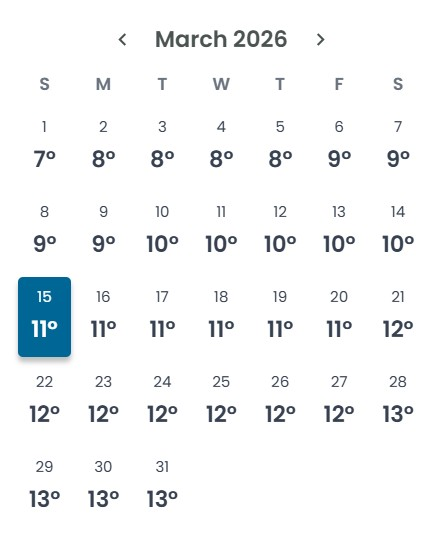
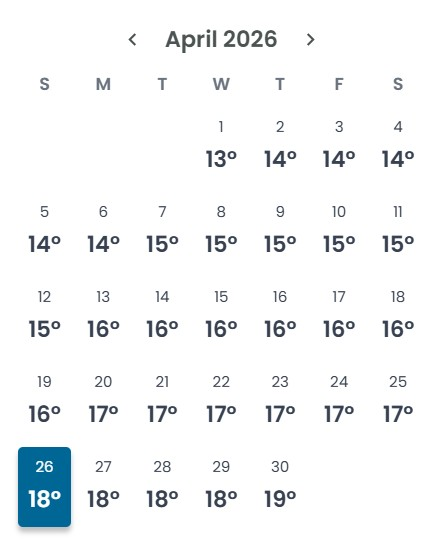
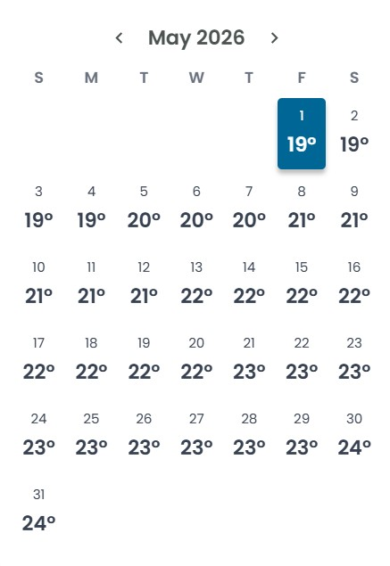
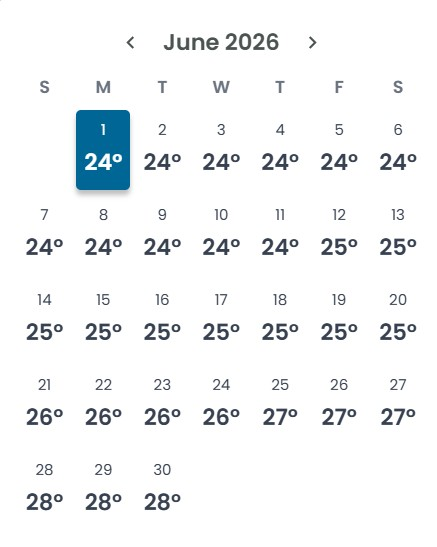
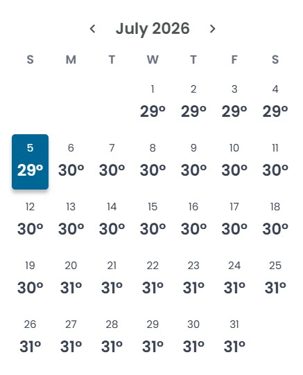
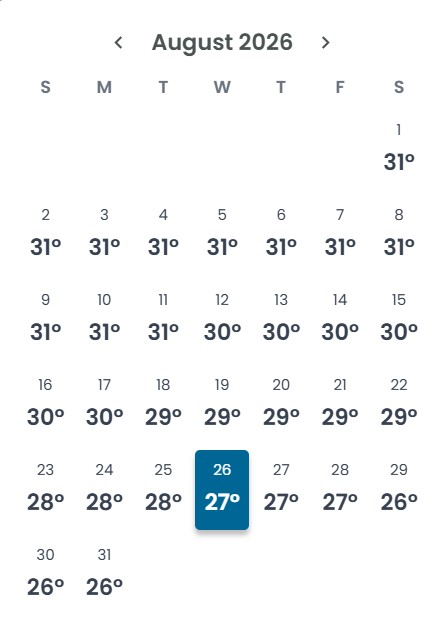
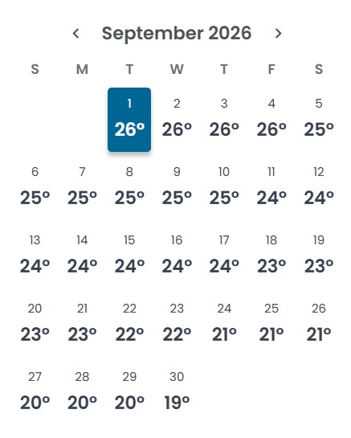
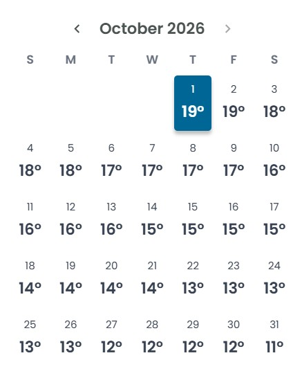

Climate
According to the Koppen Climate Chart, the Okanagan falls under the category as "Hot Summer Mediterranean Climate (Csa)"

This subtype of the Mediterranean climate (Csa) is the most common form of the Mediterranean climate, therefore it is also known as a "typical Mediterranean climate". Regions with this form of a Mediterranean climate experience average monthly temperatures in excess of 22.0 °C during its warmest month and an average in the coldest month between 18 and −3 °C (64 and 27 °F) or, in some applications, between 18 and 0 °C. Regions with this form of the Mediterranean climate typically experience hot, sometimes very hot and dry summers. Winters can be mild, cool or chilly, and some cities in this region receive somewhat regular snowfall (e.g. Kermanshah), while others do not receive any (e.g. Casablanca). Csa climates are mainly found around the Mediterranean Sea, southern Australia, southwestern South Africa, sections of Central Asia, northern sections of Iran and Iraq, the California Central Valley and Southern California, and Central Chile. Southern California's coasts also experience hot summers due to the shielding effect of the Channel Islands. However, unshielded areas of that coastline can have warm-summer Mediterranean climates with hot-summer areas just a few kilometres inland. Source: Mediterranean climate - Wikipedia
Environment Canada WeatherThe Weather Network table displays the average historical temperatures of Kelowna.
|  |  |  |  |
|  |  |  |  |